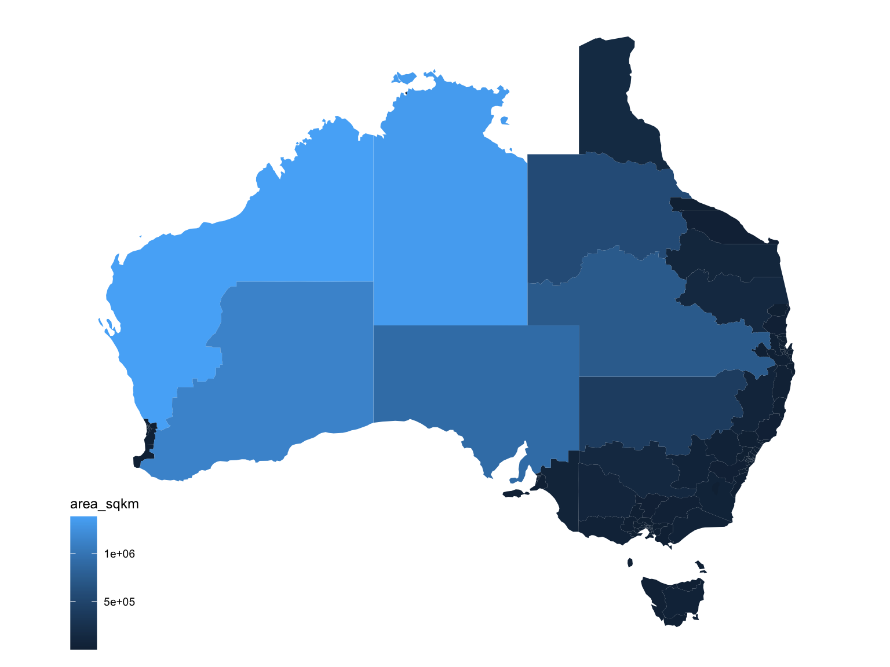
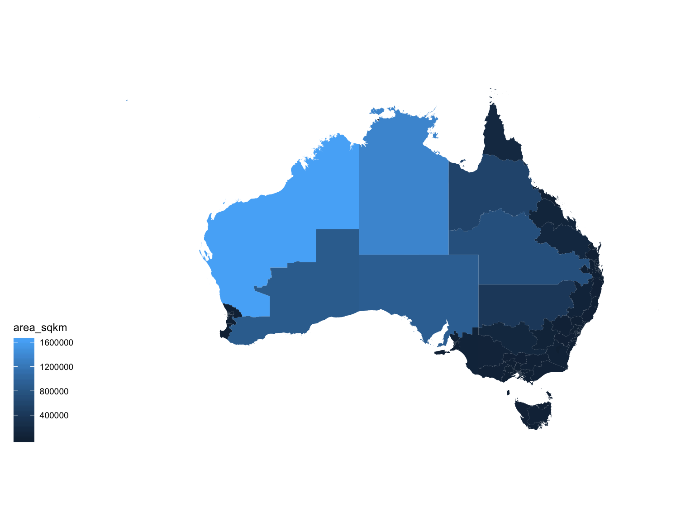

vignettes/getting-ozShapefiles.Rmd
getting-ozShapefiles.RmdThis vignette details the procedure used to obtain the maps of electoral boundaries for each of the Australian federal elections and Censuses.
The Australian Electorate Commission publishes the boundaries of the electorates on their website at http://www.aec.gov.au/Electorates/gis/gis_datadownload.htm (2010-2016). Electoral boundaries for 2001 are sourced from the Australian Government at https://data.gov.au/. The 2004 and 2007 electoral boundaries are available from the Australian Bureau of Statistics http://www.abs.gov.au/AUSSTATS/abs@.nsf/DetailsPage/2923.0.30.0012006?OpenDocument.
Once the files (preferably the national files) are downloaded, unzip the file (it will build a folder with a set of files). We want to read the shapes contained in the shp, TAB, or MIF file into R. The rgdal library can be used to do this.
The function get_electorate_shapes in this package extracts a list from the shapefile, consisting of a dataframe containing coordinates of each polygon and a dataframe with data associated with each polygon (electorate). These can be used directly with ggplot graphics. Alternatively, the load_shapefile function (also from eechidna) imports the shapefile as a SpatialPolygonsDataFrame.
# shapeFile contains the path to the shp file:
shapeFile <- "/PATH-ON-YOUR-COMPUTER/national-midmif-09052016/COM_ELB.TAB"
sF <- get_electorate_shapes(shapeFile)
nat_map <- sF$map
nat_data <- sF$dataHere we have a map of the Australian electorates colored by their size as given in the data (variable area_sqkm):
library(ggplot2)
library(ggthemes)
ggplot(aes(map_id=id), data=nat_data) +
geom_map(aes(fill=area_sqkm), map=nat_map) +
expand_limits(x=nat_map$long, y=nat_map$lat) +
theme_map() + coord_equal()
The get_electorate_shapes function works for the Australian electoral boundaries between 2001 and 2016, but may need some tweaking for other maps (including future electoral maps). Each step of this function is detailed below, with the running example of the Australian electoral boundaries for 2016.
For the 2016 election, the national electorate boundaries are given in MapInfo format.
sF is a spatial data frame containing all of the polygons. First, for convenience, lets change all variable names in the assocated data set to lower case.
We now use rgeos to thin the polygons and ensure that there are no holes while preserving the geography:
polys_sF <- gSimplify(sF, tol = 0.005)
sF <- sp::SpatialPolygonsDataFrame(polys_sF, sF@data)tol is the numerical tolerance value to be used by the Douglas-Peuker algorithm. A larger value thins the polygons by more, reducing the number of points. Doing this helps reduce the overall size of the map considerably, making it faster to plot.
A spatial polygons data frame consists of both a data set with information on each of the entities (in this case, electorates), and a set of polygons for each electorate (sometimes multiple polygons are needed, e.g. if the electorate has islands). We want to extract both of these parts.
nat_data <- sF@data
head(nat_data)## elect_div state numccds actual projected total_population australians_over_18
## 1 LINGIARI NT 335 0 0 0 0
## 2 SOLOMON NT 180 0 0 0 0
## 3 BASS TAS 208 0 0 0 0
## 4 BRADDON TAS 226 0 0 0 0
## 5 DENISON TAS 197 0 0 0 0
## 6 FRANKLIN TAS 179 0 0 0 0
## area_sqkm sortname
## 1 1352034.0451 LINGIARI
## 2 336.6861 SOLOMON
## 3 7378.7516 BASS
## 4 20826.1840 BRADDON
## 5 288.7177 DENISON
## 6 6514.2083 FRANKLINThe row names of the data file are identifiers corresponding to the polygons - we want to make them a separate variable:
nat_data$id <- row.names(nat_data)In the currently published version of the 2016 electorate boundaries, the data data frame has variable elect_div of the electorates’ names, and variable state, which is an abbreviation of the state name. It might be convenient to merge this information (or at least the state abbreviation) into the polygons (see below).
We are almost ready to export this data into a file, but we still want include geographic centers in the data (see also below).
The fortify function in the ggplot2 package extracts the polygons into a data frame.
nat_map <- ggplot2::fortify(sF)We need to make sure that group and piece are kept as factor variables - if they are allowed to be converted to numeric values, it messes things up, because as factor levels 9 and 9.0 are distinct, whereas they are not when interpreted as numbers …
It is useful to have the electorate name and state attached to the map.
nms <- sF@data %>% select(elect_div, state)
nms$id <- as.character(1:150)
nat_map <- left_join(nat_map, nms, by="id")The map data is ready to be exported to a file:
head(nat_map)## long lat order hole piece id group elect_div state
## 1 130.5179 -12.73105 1 FALSE P.1 1 G.1.1 LINGIARI NT
## 2 130.5175 -12.72562 2 FALSE P.1 1 G.1.1 LINGIARI NT
## 3 130.5294 -12.72505 3 FALSE P.1 1 G.1.1 LINGIARI NT
## 4 130.5243 -12.73409 4 FALSE P.1 1 G.1.1 LINGIARI NT
## 5 130.5310 -12.74217 5 FALSE P.1 1 G.1.1 LINGIARI NT
## 6 130.5252 -12.73432 6 FALSE P.1 1 G.1.1 LINGIARI NT###Getting centroids Getting centroids or any other information from a polygon is fairly simple, once you have worked your way through the polygon structure. First, we are going to just focus on the polygons themselves:
polys <- as(sF, "SpatialPolygons")
class(polys) # should be SpatialPolygons## [1] "SpatialPolygons"
## attr(,"package")
## [1] "sp"
length(polys) # should be 150## [1] 150Because SpatialPolygons are an S4 object, they have so called slots, and in this case the slots are:
slotNames(polys)## [1] "polygons" "plotOrder" "bbox" "proj4string"We are interested further into the polygon aspect of this object:
sp::Polygon(polys[1])## An object of class "Polygon"
## Slot "labpt":
## [1] 133.37059 -19.47997
##
## Slot "area":
## [1] 0
##
## Slot "hole":
## [1] FALSE
##
## Slot "ringDir":
## [1] 1
##
## Slot "coords":
## [,1] [,2]
## 1 133.3706 -19.47997
## 1 133.3706 -19.47997
## 1 133.3706 -19.47997
## 1 133.3706 -19.47997From this, we want to extract the labpt component, because those are the centroids we are interested in. We will wrap this into a little function called centroid to help us with that:
library(purrr)
centroid <- function(i, polys) {
ctr <- sp::Polygon(polys[i])@labpt
data.frame(long_c=ctr[1], lat_c=ctr[2])
}
centroids <- seq_along(polys) %>% purrr::map_df(centroid, polys=polys)
head(centroids)## long_c lat_c
## 1 133.3706 -19.47997
## 2 130.9358 -12.42317
## 3 147.5085 -41.15761
## 4 145.4984 -41.76005
## 5 147.2441 -42.88880
## 6 146.6276 -43.24340The centroids come in the same order as the data (luckily) and we just extend the data set for the electorates by this information, and finally export:
nat_data <- data.frame(nat_data, centroids)
write.csv(nat_data, "National-data-2016.csv", row.names=FALSE)Finally, just to check the data, a map of the Australian electorates colored by their size as given in the data (variable area_sqkm):
ggplot(aes(map_id=id), data=nat_data) +
geom_map(aes(fill=area_sqkm), map=nat_map) +
expand_limits(x=nat_map$long, y=nat_map$lat) +
theme_map() + coord_equal()